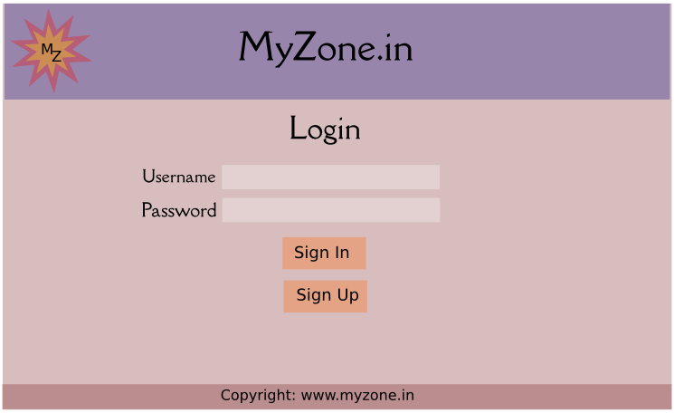

5.1. Login Page¶
In this section we will create the login page for user login on the website. It will have authentication system.
5.1.1. Requirement¶
Let us have a look on the basic requirement of this page.
Our Final Page would look like this :
{kind=link}
Note: The colors in the above image and our actual output may vary.
Web Page should have -
#. A header with the company logo in the left and Company Name Myzone.in in the center. .. todo:: insert bullets properly
- Color of the header part would be different from the body.
- Then the heading Login will be in the center.
#. Two text box for Username and Password should be there, each with respective label.
- It will take input from the user to login to the website or to sign-up.
- Two buttons below - One for SignIn and other for SignUp.
#. When the user sign-in, the query will be triggered to the myzone_user database with the username and password.
#. If the user exists and password is correct, he is redirected to the Main Page.
#. If the user is present, but the password is incorrect, it flags an error message.
#. If the user is not present, it asks to sign-up, by taking the username and password.
#. If then the username exists, it shows en error message, else an account is created for that user, and he is redirected to the Main Page.
- In the end, the footer has the website name with copyright information.